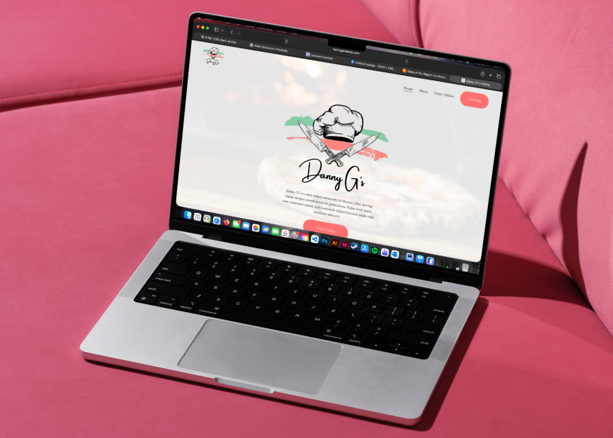

i started doing work for Danny G's in december of 2025, when i was tasked with building a simple 3-page website for a small italian catering company.
the scope of the project swiftly changed as i realized how out-dated and unfriendly their ai-generated menu and social page looked. i redesigned not only their web menu, but also their logo.
shortly after finishing a pretty standard project, i was asked by danny yet again to make a website and menu for him as he would be opening a restauraunt in the next few months!
so in a very short timeframe, i was able to build a full website and menu.
what started out as a typical website project quickly grew into a quick turnaround project that taught me the importance of understanding project scope.